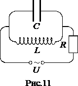
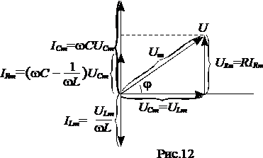
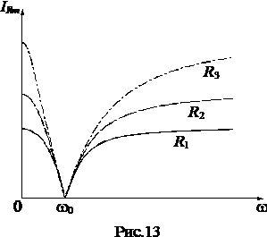

Переменный ток. Резонанс тока.
Описанные в предыдущем параграфе установившиеся вынужденные колебания можно рассматривать как протекание в цепи, обладающей емкостью, индуктивностью и активным сопротивлением, переменного тока, обусловленного переменным напряжением \(U=U_{m}cos(\omega t)\). Этот ток изменяется по закону согласно формулам (21)-(23). Стоящее в знаменателе формулы (23) выражение $$Z=\sqrt{R^{2}+(\omega L-\frac{1}{\omega C})^{2}}\; (33)$$ называется полным электрическим сопротивлением цепи или импедансом.
Всякая реальная цепь обладает конечными R, L и C. В отдельных случаях некоторые из этих параметров бы¬вают таковы, что их влиянием на ток можно пренебречь. Допустим, что R цепи можно положить равным нулю, а C – равным бесконечности. Тогда из формул (22) и (23) следует, что $$I_{m}=\frac{U_{m}}{\omega L},\; (34)$$ a tg\(\varphi\)=∞ (\(\varphi =\frac{\pi }{2}\)). Величину $$X_{L}=\omega L\; (35)$$ называют реактивным индуктивным сопротивлением цепи или просто индуктивным сопротивлением цепи. Если L выразить в Генри, а \(\omega\) – в обратных секундах (\(c^{-1}\)), то \(X_{L}\) будет выражено в Омах. Из (35) следует, что индуктивное сопротивление растет с частотой \(\omega\). Постоянному току (\(\omega=0\)) индуктивность не оказывает сопротивления. Ток индуктивности отстает от напряжения на индуктивности на \(\frac{\pi }{2}\).
Теперь допустим, что можно положить равными нулю R и L. Тогда согласно формулам (22) и (23) $$I_{m}=\frac{U_{m}}{\frac{1}{\omega C}},\; (36)$$ a tg\(\varphi\)=-∞ (\(\varphi =-\frac{\pi }{2}\)). Величину $$X_{C}=\frac{1}{\omega C}\; (37)$$называют реактивным емкостным сопротивлением или просто емкостным сопротивлением. Если C выразить в Фарадах, а \(\omega\) – в обратных секундах (\(c^{-1}\)), то \(X_{C}\) будет выражено в Омах. Из (37) следует, что емкостное сопротивление убывает с частотой. Для постоянного тока \(X_{C}\)=∞; следовательно, постоянный ток через конденсатор течь не может. Поскольку (\(\varphi =-\frac{\pi }{2}\)), ток, текущий через конденсатор, опережает напряжение на конденсаторе на \(\frac{\pi }{2}\).
Наконец, допустим, что можно положить . В этом случае формула (23) переходит в $$I_{m}=\frac{U_{m}}{\mid \omega L-\frac{1}{\omega C}\mid }\; (38)$$
Величина $$X=\omega L-\frac{1}{\omega C}=X_{L}-X_{C}\; (39)$$ называется реактивным сопротивлением или реактансом.

Резонанс тока наблюдается в электрической схеме изображенной на рис.11, которая состоит из генератора синусоидальных колебаний с амплитудой U, сопротивления внешней цепи R, и соединенных параллельно конденсатора емкости C и катушки индуктивности L (колебательный контур). Общий ток цепи IR разветвляется на ток в конденсаторе IC и ток в катушке IL. Причем ток IC опережает на \(\frac{\pi }{2}\) напряжение на конденсаторе UC, а ток IL отстает на \(\frac{\pi }{2}\) от напряжения на катушке UL=UC. Наглядно это можно представить в виде векторной диаграммы показанной на рис.12.

Токи IC и IL имеют противоположные фазы (разность фаз составляет ) и в зависимости от их величины уравновешивают друг друга полностью или частично. Частота генератора, при которой в цепи имеет место резонанс тока, определяется из условия, что IC=IL и общий ток цепи IR=0 . Из вышесказанного следует \(\omega _{Ires}CU_{Cm}=\frac{U_{Lm}}{\omega _{Ires}L}\), а \(\omega _{Ires}=\omega _{0}=\frac{1}{\sqrt{LC}}\).
Таким образом, резонансная частота при резонансе токов определяется собственной частотой колебательного контура \(\omega _{0}\). На рис.13 представлены зависимости амплитуды тока во внешней цепи IRm в зависимости от частоты генератора для различных значений активного сопротивления (R1>R2>R3).

Полная проводимость при резонансе токов оказывается близкой к нулю. Остается некомпенсированной лишь небольшая активная проводимость, обусловленная активным сопротивлением катушки и несовершенной изоляцией конденсатора. Поэтому ток в неразветвленной цепи IR имеет минимальное значение, тогда как токи IC и IL могут превышать его в десятки раз.